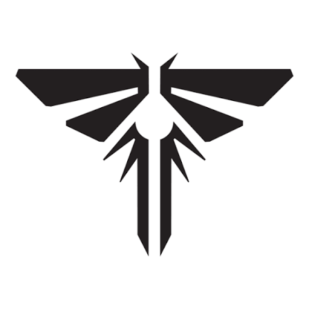

Meu primeiro post
Por: Pedro
Boas-vindas ao meu novo blog! Aqui vou compartilhar dicas de macetes para zeras o jogo mais facil.
Vou compartilhar conhecimentos sobre ellie e joel

Por: Pedro
Boas-vindas ao meu novo blog! Aqui vou compartilhar dicas de macetes para zeras o jogo mais facil.
Por: Pedro
Boas-vindas ao meu novo blog! De como pegar skins secretas dentro do jogo.